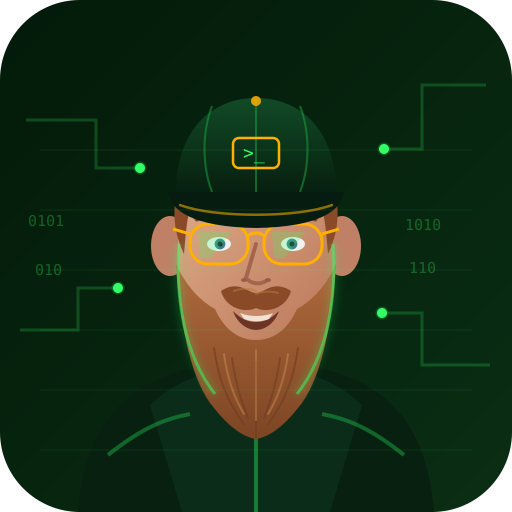

*The story behind HackOn Photo & Video DeDupe — and the person building it.*
My father bought us a brand new Commodore 64 for Christmas of 1982. I loved that Commodore 64 more than my own sister back then. I remember spending hours on it playing games and hand keying in programs from magazines like the old *Compute!'s Gazette*.
In the Sixth grade I took my Commodore to school for show and tell. I shared the game Little Computer People, permanently cementing my nerd cred. Many noogies and wedgies followed.
In the late '80s I took my first computer-related classes at McLennan Community College, and in late 1999 I graduated from TSTC Waco with a 3.6 GPA — an A.A.S. in Computer Network Systems Administration.
Later I decided to go back and learn to program, so in 2011 I decided to go all in. Not only did I attend Houston Community College, but I took the job as a paid tutor for the college. I manned the department open lab for all programming students, including those with non-programming majors. I tutored in Java, C++, and C# primarily. I learned and reinforced a structured-programming mindset that has served me well. In May of 2015 I graduated from HCC with a 3.9 GPA — an Associate in Arts (Highest Honors) in Application Development with C#. At the time I was planning to get a bachelor's degree.
In 2011, while still maintaining my course studies and tutoring, I also worked full time at Hewlett-Packard as a build and QA tech. I learned a lot about hardware: building servers, racking equipment, and wiring standards. We wanted to ensure it not only worked, but wasn't lagged out by bad cables. We built massive clusters the size of two semi trailers. So I know hardware well.
In 2014 I got sidetracked into support services, where I have spent the better part of 12 years learning what it takes to keep a company running. Learning about critical systems and planning for disaster recovery. The constant pressure to stay ahead of the bad guys while also having to defend against the C-suite's next idea. I've installed and configured several enterprise-class applications for production use. I've assisted with a dozen more — including converting from Quicken to a proper financial management system (FMS).
I've seen and participated in multiple real-world disaster-recovery events (countless virus and worm attacks, up to the more modern AI-assisted — now fully AI-driven — attacks on our modern environments). And during all of that I got to write dozens of scripts, create websites, and set up automated ticket-submission processes.
The only thing I've never done is release any code.
It's my belief that the biggest advantage a coder has is his personal library of code. A well-maintained code base with easily reused code could be the difference between you and your competitor getting the job. Clarity counts.
But now AI can write code for anyone with a pulse. Worse than that, it does it 1000% or more faster than I can. I can only imagine what horrors the C-suite is building right now.
But now I know my next move.
I'm ready to take on the challenge of writing code in the AI era, and to prove it I will soon release my first project under a source-available model for human inspection. Clear code that is well-formatted and easily maintainable by humans and AI:
All AI-generated, with my direct control. All on less than $20 of Claude.
What can I help you build?